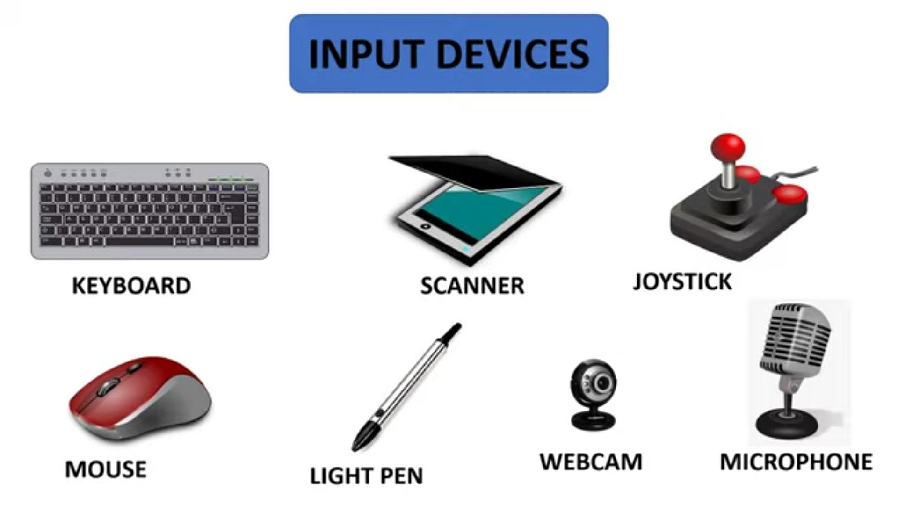

Input devices are similar to the ingredients we use to make our food, you can’t make a meal without any ingredients! Input devices allow users to request certain outcomes from their device. It requires user input to dictate what action the computer should take. For example, the computer mouse is an input device. Whenever you move your cursor and click on something, such as a link or an application, there are a series of processes that must be performed in order for the user to receive any output. Similarly to output devices, inputs are processed every clock cycle and can do so in conjunction with other inputs or outputs.

In the same vein as output devices, the CPU is largely responsible for processing all user input. There are controller chips in every accessory and part of a computer, these are processors. Unlike the CPU and controller chips have the relationship of a manager and their employees. Let’s say you’re typing an essay. The keyboard will communicate to the CPU what keys are being pressed, the CPU then delegates the task of displaying what you’re typing on the monitor. The acts of typing and maneuvering your cursor send information to the CPU. That is the responsibility of input devices. There are as many types of input devices as there are output. Each respective device appeals to all the various actions a user can perform. There are microphones to upload sound, cameras to send video, and controllers (of all types) to navigate the users system. All this makes our devices more accessible.